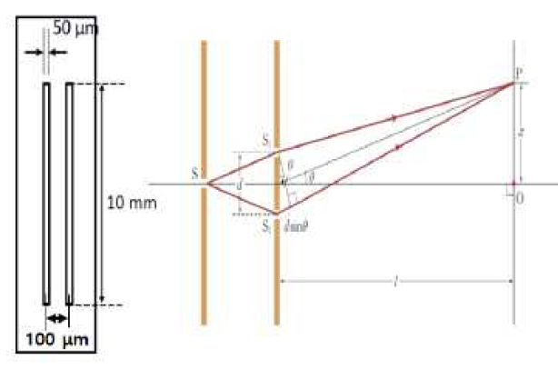

문제 2
다음은 영의 간섭 실험에 대한 슬릿 형태와 이중슬릿 장치의 모식도이다. 사용한 레이저는 600 nm 파장을 가지고 있다.

(가) 600 nm 파장을 가진 레이저를 사용하여 간섭 실험을 할 경우 \(l=1\,\text{m}\) 떨어져 있는 스크린에서 중심으로부터 세번째 보강 간섭과 상쇄 간섭을 하는 위치는 중심으로부터 얼마만큼 거리에 있는가? (이중 슬릿 간격은 0.1 mm) (10점)
(나) 레이저 파장을 길게 또는 짧게 바꾸면 가)의 답은 어떻게 달라지는가? (5점)
(다) 이중 슬릿의 슬릿 폭이 커지거나 슬릿간 간격이 커지면 스크린의 무늬는 어떻게 달라지는가? (15점)
(라) 레이저에서 나오는 전자기파의 편광상태에 따라서 간섭 무늬 패턴은 어떻게 될 지 설명해 보시오. (20 점)